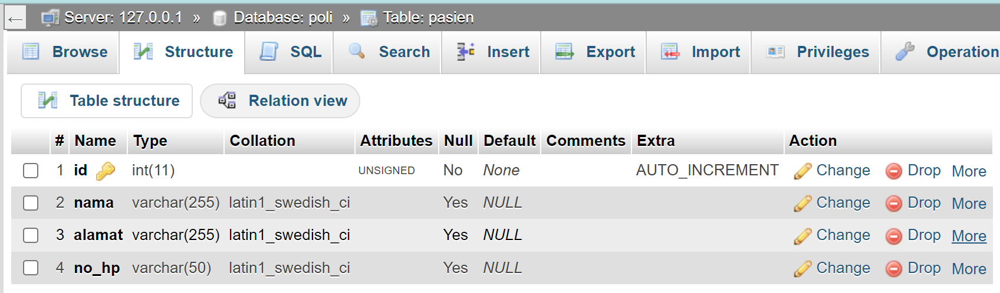
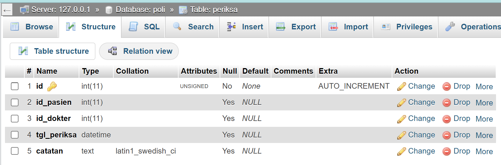

Studi Kasus (Poliklinik)
Dalam studi kasus poliklinik mahasiswa dapat membuat web sederhana mengenai poliklinik dengan fitur home, data master (berisi data dokter dan pasien), dan periksa.


Database
Membuat database baru pada localhost/phpmyadmin dengan nama poliklinik. setelah itu dapat membuat tabel-tabel yang diperlukan, yaitu tabel dokter, tabel pasien, tabel periksa.

- Dokter
Pada tabel dokter dapat menyimpan id, nama, alamat dan nomor hp. Pada tabel tersebut id merupakan primary key dengan tipe data integer, pada field nama, alamat, dan nomor hp memiliki tipe data varchar.

- Pasien
Pada tabel pasien dapat menyimpan id, data nama, alamat, dan nomor hp. Primary key terletak pada id dengan tipe data integer, pada field nama, alamat dan nomor hp bertipe data varchar.

- Periksa
Pada tabel periksa menyimpan data id periksa, id dokter, id pasien, tanggal periksa dan catatan. Pada tabel periksa saling terhubung dengan tabel dokter dan pasien melalui id dokter dan id pasien. id dokter dan id pasien berperan sebaga foreign key.

Koneksi
Koneksi berfungsi untuk menghubungkan database dengan web yang dibuat.
<?php
$databaseHost = 'localhost';
$databaseName = 'poliklinik';
$databaseUsername = 'root';
$databasePassword = '';
$mysqli = mysqli_connect($databaseHost,
$databaseUsername, $databasePassword, $databaseName);untuk terkoneksi ke server mysql kita menggunakan argumen mysqli_connect. Pada mysqli_connect terdapat beberapa parameter, yaitu mysql_host, mysql_host, mysql_user, mysql_password, dan mysql_database.
- mysql_host
Jika menjalankan MySQL menggunakan XAMPP di komputer yang sama dengan tempat web server Apache berjalan, maka alamat ini bisa diisi dengan “localhost” atau “127.0.0.1”. Namun jika MySQL server dijalankan dari perangkat komputer server lain, argumen ini akan berisi IP address dari komputer server tersebut. - mysql_user
berisi nama pengguna MySQL yang digunakan untuk login ke server database, seperti “root”, “admin”, atau “nama_anda”. Karena kita menggunakan MySQL dari XAMPP, secara default, nama pengguna yang digunakan adalah “root”. Jadi, jika Anda tidak mengubah pengaturan default XAMPP, Anda dapat menggunakan “root” sebagai nilai argumen nama pengguna saat memanggil fungsi mysqli_connect(). - mysql_password
diisi dengan password user yang terdaftar pada server mysql. Secara default karena kita menggunakan MySQL dari xampp tanpa mengubah passwordnya maka nilai passwordnya adalah kosong sehingga dapat diisikan ““. - mysql_database
pada parameter mysql_database diisikan nama database yang telah kita buat. Database yang kita buat sebelumnya adalah poliklinik atau sesuai yang telah anda buat.
Index
Bootstrap
Untuk membuat tampilan dapat menggunakan Bootstrap. Pada halaman bootstrap buka halaman docs untuk melihat dokumentasi dari penggunakan bootstrap lalu cari dokumentasi komponen yang ingin digunakan. Komponen-komponen yang digunakan :
- Navbar (dengan dropdown)
- Form
- Tabel
- Button
Pilih dokumentasi yang sesuai dan modifikasi sesuai dengan kebutuhan yang ingin digunakan.
CRUD
- Create
- Read
- Update
- Delete